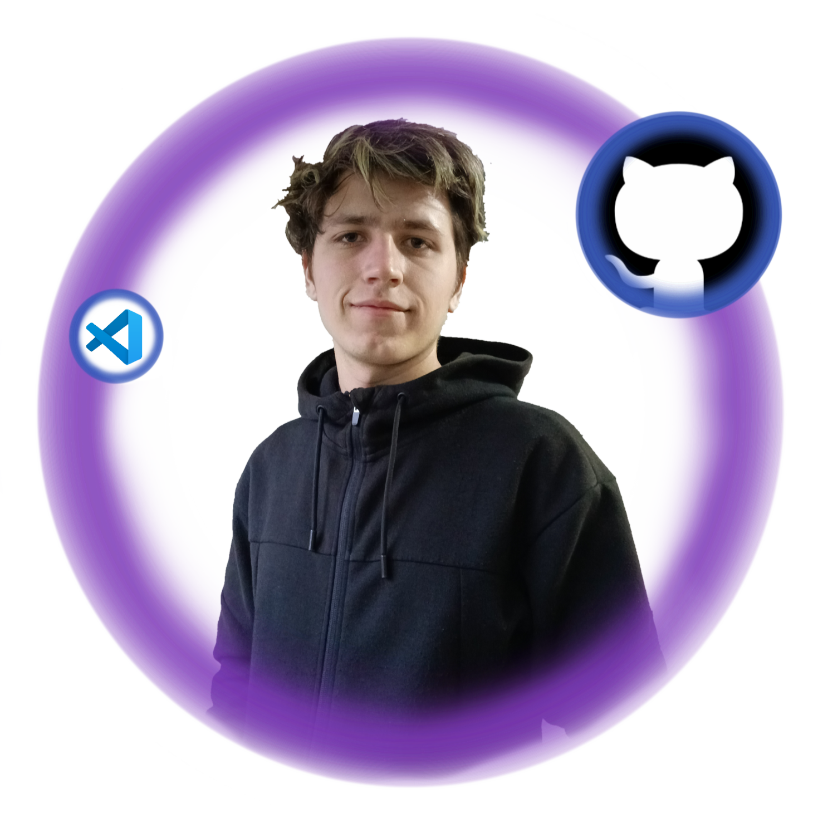

¡Bienvenido a mi Portafolio!
Soy Jordi Gallardo, un apasionado del desarrollo Frontend, especializado en crear interfaces modernas y dinámicas. Aquí podrás explorar mis proyectos, conocer más sobre mí y descubrir cómo podemos trabajar juntos para dar vida a nuevas ideas.

Sobre Mí
¡Hola! Soy Jordi Gallardo, un apasionado desarrollador Frontend dedicado a crear experiencias web intuitivas y visualmente atractivas. Con un gran ojo para el diseño y un sólido dominio de las tecnologías web modernas, disfruto desarrollando interfaces amigables que dan vida a las ideas.
Estoy en constante aprendizaje, explorando nuevas tecnologías para mejorar mis habilidades. Ya sea creando componentes de UI elegantes, optimizando el rendimiento o implementando interacciones fluidas, siempre busco la excelencia en cada proyecto.
¡Construyamos algo increíble juntos!
Mis Proyectos
Details of my projects...
Contactame
Feel free to get in touch...